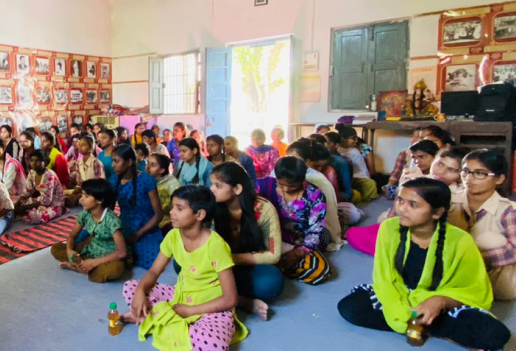

KGNMT Delhi runs 10 creches in the villages of Alipur Block in North Delhi. This activity of the kasturba Trust is of fundamental importance in the society. The women are equal breadwinners to the men and chreches provide a facility for mothers to leave their children in a secure environment when they are at work. Each crech has 25 childrn of the age group 0-5 years. Each creche has one teacher and one helper. Infant care, pre-school education and a nutrition programme are provided.
The KGNMT's children home provides an essential and humanitarian service to the rural areas of North Delhi. The Home houses 75 girls of school going ages (5-18) who because of various circumstances have been abandoned by their families. The kasturba Trust is their home and the trust is responsible for their well-being and education.
